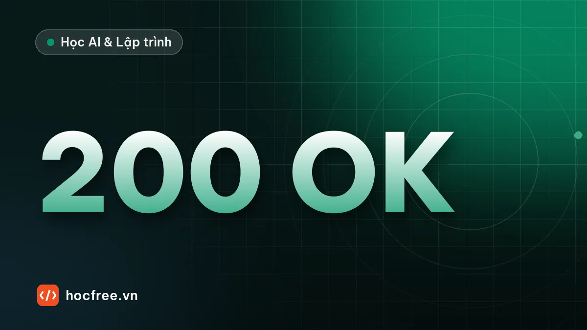

Kiểm thử API FastAPI bằng pytest và TestClient
Viết test tự động cho FastAPI: TestClient, fixture tạo CSDL SQLite riêng, dependency_overrides, kiểm thử 404, 422 và luồng đăng nhập.

Học xong bài này, bạn sẽ
- Gọi API trong test bằng TestClient
- Dùng CSDL riêng cho test bằng dependency_overrides
- Kiểm thử luồng có đăng nhập
Nên học trước: Xác thực người dùng: băm mật khẩu và JWT
Nội dung bài viết
Thử API bằng /docs sau mỗi lần sửa code thì chậm và chắc chắn sẽ có lúc quên một trường hợp. Với API có đăng nhập, phân quyền và hàng chục endpoint, test tự động là thứ duy nhất cho bạn sự tự tin khi sửa code hay nâng cấp thư viện. FastAPI được thiết kế để test rất dễ: bài này viết bộ test hoàn chỉnh cho API sổ ghi chú ở bài trước bằng pytest (chặng 6) và TestClient.
1. TestClient: gọi API mà không cần chạy máy chủ
# (minh họa) cần API sổ ghi chú ở bài FastAPI đầu tiên
from fastapi.testclient import TestClient
from main import app
client = TestClient(app)
def test_trang_chu():
r = client.get("/")
assert r.status_code == 200
assert r.json() == {"thong_diep": "Xin chào từ FastAPI"}TestClient gọi thẳng vào ứng dụng trong cùng tiến trình, không mở cổng mạng, nên test chạy rất nhanh. Cách dùng giống hệt requests và httpx (chặng 7): client.get, client.post(url, json=...), headers=..., r.status_code, r.json(). Viết with TestClient(app) as c: để chạy cả lifespan khi khởi động.
2. Vấn đề: test không được đụng CSDL thật
Nếu test dùng so_ghi_chu.db như khi chạy thật, mỗi lần chạy test sẽ để lại dữ liệu rác, test sau phụ thuộc test trước, và tệ nhất là có thể xóa dữ liệu thật. Ta cần mỗi test một CSDL riêng, trống trơn. Đây là lúc dependency injection ở bài trước phát huy tác dụng: endpoint nhận Session qua Depends(get_session), nên khi test ta chỉ việc thay get_session bằng hàm khác.
so-ghi-chu/
├── app/ ...
└── tests/
├── conftest.py ← fixture dùng chung: client, người dùng đã đăng nhập
├── test_auth.py
└── test_ghi_chu.py# (minh họa) tests/conftest.py
import os
os.environ["DATABASE_URL"] = "sqlite://" # đặt TRƯỚC khi import app: không bao giờ đụng CSDL thật
import pytest
from fastapi.testclient import TestClient
from sqlalchemy import create_engine
from sqlalchemy.orm import Session
from sqlalchemy.pool import StaticPool
from app.database import Base, get_session
from app.main import app
@pytest.fixture
def client():
"""Mỗi test một CSDL SQLite trong RAM, trống trơn."""
engine = create_engine(
"sqlite://", connect_args={"check_same_thread": False}, poolclass=StaticPool
)
Base.metadata.create_all(engine)
def get_session_test():
with Session(engine) as session:
yield session
app.dependency_overrides[get_session] = get_session_test
with TestClient(app) as c:
yield c
app.dependency_overrides.clear()
def dang_ky_va_dang_nhap(client: TestClient, ten: str, mat_khau: str = "matkhau-123") -> dict:
"""Trả header Authorization sẵn dùng."""
r = client.post("/auth/dang-ky", json={"ten_dang_nhap": ten, "mat_khau": mat_khau})
assert r.status_code == 201
r = client.post("/auth/token", data={"username": ten, "password": mat_khau})
return {"Authorization": f"Bearer {r.json()['access_token']}"}
@pytest.fixture
def an(client):
return dang_ky_va_dang_nhap(client, "an_nguyen")
@pytest.fixture
def binh(client):
return dang_ky_va_dang_nhap(client, "binh")os.environ["DATABASE_URL"] = "sqlite://"đặt trước khi importapp, để engine của ứng dụng (vàcreate_alltrong lifespan) trỏ vào CSDL trong RAM, không tạo file thật."sqlite://"là SQLite trong RAM.StaticPoolbuộc mọi kết nối dùng chung một kết nối duy nhất; không có nó, mỗi kết nối mới sẽ thấy một CSDL trống khác, bảng vừa tạo "biến mất".app.dependency_overrides[get_session] = get_session_test: mọi endpoint đang dùngget_sessionsẽ nhận Session của CSDL test. Sau test thìclear()để không ảnh hưởng test khác.- Fixture
clientcóyield: phần trước là chuẩn bị, phần sau là dọn dẹp. Mỗi test gọi tớiclientnhận một CSDL mới tinh. - Fixture
an,binhdùng fixtureclientđể đăng ký, đăng nhập và trả về headerAuthorization. Test nào cần người dùng đăng nhập chỉ việc khai báo tham sốan.
3. Test luồng xác thực
# (minh họa) tests/test_auth.py
def test_dang_ky_khong_tra_mat_khau(client):
r = client.post("/auth/dang-ky", json={"ten_dang_nhap": "lan", "mat_khau": "matkhau-123"})
assert r.status_code == 201
assert r.json() == {"id": 1, "ten_dang_nhap": "lan"}
def test_dang_ky_trung_ten(client, an):
r = client.post("/auth/dang-ky", json={"ten_dang_nhap": "an_nguyen", "mat_khau": "khac-12345"})
assert r.status_code == 409
def test_dang_nhap_sai_mat_khau(client, an):
r = client.post("/auth/token", data={"username": "an_nguyen", "password": "sai-roi-123"})
assert r.status_code == 401
assert r.headers["www-authenticate"] == "Bearer"
def test_toi(client, an):
assert client.get("/nguoi-dung/toi", headers=an).json()["ten_dang_nhap"] == "an_nguyen"
def test_chua_dang_nhap_hoac_token_gia(client):
assert client.get("/ghi-chu").status_code == 401
assert (
client.get("/ghi-chu", headers={"Authorization": "Bearer abc.def.ghi"}).status_code == 401
)Test đầu tiên kiểm tra một yêu cầu bảo mật quan trọng: response đăng ký đúng bằng {"id": 1, "ten_dang_nhap": "lan"}, tức là không lộ mat_khau_bam. So sánh cả dict thay vì từng trường giúp phát hiện trường thừa.
4. Test nghiệp vụ và phân quyền
# (minh họa) tests/test_ghi_chu.py
import pytest
def test_vong_doi_ghi_chu(client, an):
r = client.post("/ghi-chu", json={"tieu_de": "Mua sữa", "the": ["việc nhà"]}, headers=an)
assert r.status_code == 201
gc = r.json()
assert gc["tieu_de"] == "Mua sữa" and gc["noi_dung"] == ""
assert [g["id"] for g in client.get("/ghi-chu", headers=an).json()] == [gc["id"]]
r = client.patch(f"/ghi-chu/{gc['id']}", json={"noi_dung": "2 hộp"}, headers=an)
assert r.status_code == 200
assert r.json()["noi_dung"] == "2 hộp"
assert r.json()["the"] == ["việc nhà"] # trường không gửi thì giữ nguyên
assert client.delete(f"/ghi-chu/{gc['id']}", headers=an).status_code == 204
assert client.get(f"/ghi-chu/{gc['id']}", headers=an).status_code == 404
@pytest.mark.parametrize(
"body",
[{}, {"tieu_de": ""}, {"tieu_de": "x" * 101}, {"tieu_de": "a", "the": "khong-phai-list"}],
)
def test_tao_du_lieu_sai(client, an, body):
assert client.post("/ghi-chu", json=body, headers=an).status_code == 422
def test_patch_null_bi_tu_choi(client, an):
gc = client.post("/ghi-chu", json={"tieu_de": "A"}, headers=an).json()
assert (
client.patch(f"/ghi-chu/{gc['id']}", json={"tieu_de": None}, headers=an).status_code == 422
)
def test_tim_kiem_va_phan_trang(client, an):
for i in range(5):
client.post(
"/ghi-chu",
json={"tieu_de": f"Việc {i}", "noi_dung": "gấp" if i % 2 else ""},
headers=an,
)
assert len(client.get("/ghi-chu", params={"tu_khoa": "gấp"}, headers=an).json()) == 2
trang_2 = client.get("/ghi-chu", params={"skip": 2, "limit": 2}, headers=an).json()
assert [g["tieu_de"] for g in trang_2] == ["Việc 2", "Việc 3"]
def test_khong_dung_duoc_ghi_chu_nguoi_khac(client, an, binh):
gc = client.post("/ghi-chu", json={"tieu_de": "Bí mật của An"}, headers=an).json()
assert client.get(f"/ghi-chu/{gc['id']}", headers=binh).status_code == 404
assert (
client.patch(f"/ghi-chu/{gc['id']}", json={"tieu_de": "Bị sửa"}, headers=binh).status_code
== 404
)
assert client.delete(f"/ghi-chu/{gc['id']}", headers=binh).status_code == 404
assert client.get("/ghi-chu", headers=binh).json() == []
assert client.get(f"/ghi-chu/{gc['id']}", headers=an).json()["tieu_de"] == "Bí mật của An"- Một test cho cả vòng đời tạo, xem, sửa, xóa: các bước phụ thuộc nhau nên gom lại hợp lý. Kiểm tra cả việc PATCH không làm mất trường không gửi.
parametrizechạy một test với 4 kiểu dữ liệu sai: thiếu trường, rỗng, quá dài, sai kiểu.- Test cuối là quan trọng nhất về bảo mật: Bình không đọc, sửa, xóa, liệt kê được ghi chú của An, và ghi chú của An vẫn nguyên vẹn sau các thử nghiệm đó. Lỗi phân quyền thường không ai phát hiện khi thử bằng tay với một tài khoản.
5. Chạy và đọc kết quả
$ uv run pytest -v
tests/test_auth.py::test_dang_ky_khong_tra_mat_khau PASSED [ 7%]
tests/test_auth.py::test_dang_ky_trung_ten PASSED [ 15%]
tests/test_auth.py::test_dang_nhap_sai_mat_khau PASSED [ 23%]
tests/test_auth.py::test_toi PASSED [ 30%]
tests/test_auth.py::test_chua_dang_nhap_hoac_token_gia PASSED [ 38%]
tests/test_ghi_chu.py::test_vong_doi_ghi_chu PASSED [ 46%]
tests/test_ghi_chu.py::test_tao_du_lieu_sai[body0] PASSED [ 53%]
tests/test_ghi_chu.py::test_tao_du_lieu_sai[body1] PASSED [ 61%]
tests/test_ghi_chu.py::test_tao_du_lieu_sai[body2] PASSED [ 69%]
tests/test_ghi_chu.py::test_tao_du_lieu_sai[body3] PASSED [ 76%]
tests/test_ghi_chu.py::test_patch_null_bi_tu_choi PASSED [ 84%]
tests/test_ghi_chu.py::test_tim_kiem_va_phan_trang PASSED [ 92%]
tests/test_ghi_chu.py::test_khong_dung_duoc_ghi_chu_nguoi_khac PASSED [100%]
============================= 13 passed in 1.79s ==============================
$ uv run pytest -q --cov=app --cov-report=term-missing
Name Stmts Miss Cover Missing
-----------------------------------------------
app\auth.py 18 1 94% 29
app\database.py 14 2 86% 20-21
app\main.py 68 0 100%
app\security.py 22 0 100%
...
TOTAL 163 3 98%Hơn một nửa thời gian chạy là băm mật khẩu Argon2: cố tình chậm như đã giải thích. Coverage chỉ ra hai chỗ chưa test: dòng 20–21 của database.py là get_session thật (đã bị thay khi test, bình thường), và dòng 29 của auth.py: trường hợp token hợp lệ nhưng người dùng không còn tồn tại. Đó chính là bài tập 1.
session để tạo người dùng một lần, hoặc cấu hình hàm băm rẻ hơn chỉ khi test). Không bao giờ hạ tham số băm của môi trường chạy thật.Tóm tắt
TestClient(app)gọi API trong tiến trình;withđể chạy lifespan.- Thay CSDL bằng
app.dependency_overrides[get_session]; SQLite trong RAM +StaticPool; đặt biến môi trường trước khi import app. - Fixture cho client và người dùng đã đăng nhập, đặt trong
conftest.py. - Test mã trạng thái, nội dung trả về, lỗi 401, 404, 409, 422 và đặc biệt là phân quyền giữa các người dùng.
Bài tập
Bài 1. Phủ nốt nhánh còn thiếu
Viết test cho hai trường hợp: token hợp lệ nhưng người dùng không tồn tại, và token đã hết hạn. Cả hai phải trả 401; chạy lại coverage để thấy auth.py đạt 100%.
Xem đáp án
# (minh họa) tests/test_token.py
from datetime import UTC, datetime, timedelta
import jwt
from app.security import ALGORITHM, SECRET_KEY, tao_token
def test_token_hop_le_nhung_nguoi_dung_khong_ton_tai(client):
h = {"Authorization": f"Bearer {tao_token('nguoi_da_bi_xoa')}"}
assert client.get("/nguoi-dung/toi", headers=h).status_code == 401
def test_token_het_han(client, an):
het_han = datetime.now(UTC) - timedelta(minutes=1)
cu = jwt.encode({"sub": "an_nguyen", "exp": het_han}, SECRET_KEY, algorithm=ALGORITHM)
r = client.get("/nguoi-dung/toi", headers={"Authorization": f"Bearer {cu}"})
assert r.status_code == 401$ uv run pytest -q --cov=app --cov-report=term-missing
app\auth.py 18 0 100%
15 passed in 2.10sTest thứ hai tự tạo một token đã hết hạn một phút bằng đúng khóa của ứng dụng: chữ ký hợp lệ nhưng exp đã qua, PyJWT ném ExpiredSignatureError (lớp con của InvalidTokenError) và API trả 401.
Bài 2. Test cho tính năng mới
Thêm query parameter the để lọc ghi chú theo thẻ (như bài tập bài FastAPI đầu tiên, nhưng giờ trên CSDL). Viết test trước, thấy nó đỏ, rồi mới viết code cho xanh.
Xem gợi ý
Test: An tạo 3 ghi chú, hai cái có thẻ "việc nhà"; GET /ghi-chu?the=việc nhà phải trả đúng 2 ghi chú; Bình gọi cùng tham số phải nhận list rỗng. Cột the là JSON nên lọc trong SQL phụ thuộc CSDL; cách đơn giản chạy được trên SQLite là lọc bằng Python sau khi truy vấn theo chu_id, nhớ lọc trước khi cắt trang. Quy trình "viết test trước, code sau" gọi là TDD (Test-Driven Development).
Nguồn tham khảo: FastAPI: Testing; FastAPI: Testing Dependencies with Overrides; SQLAlchemy: SQLite in-memory database và StaticPool; pytest fixtures.
Bài tập thực hành
- Viết test cho đủ các endpoint ghi chú: tạo, liệt kê, xem, sửa, xóa và trường hợp 404, 422.
- Viết test chứng minh người dùng A không đọc được ghi chú của người dùng B.
Làm xong bài tập mới chuyển sang bài tiếp theo: tự viết code là cách duy nhất để nhớ lâu.